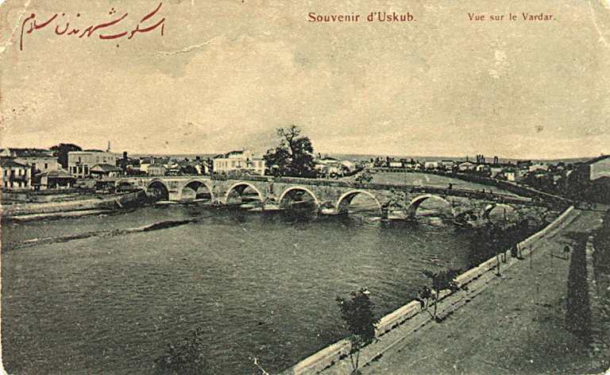
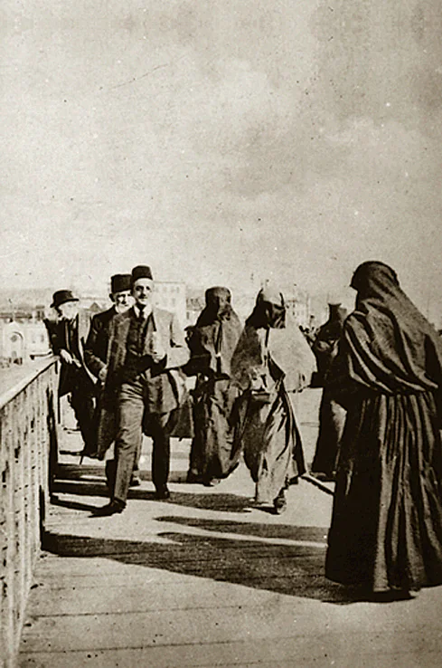
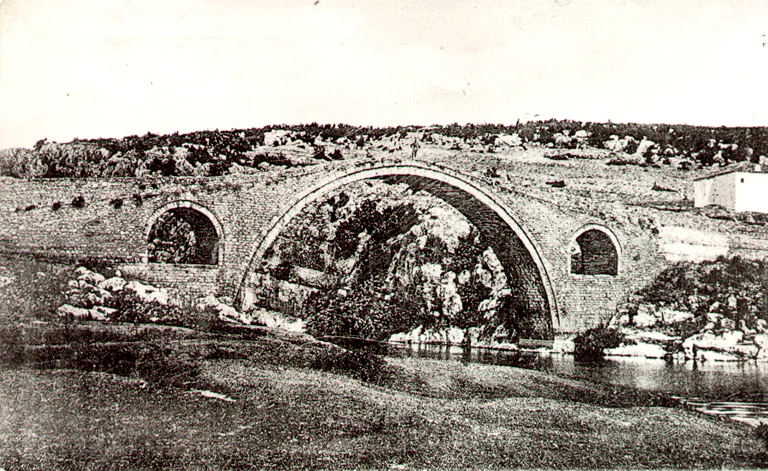
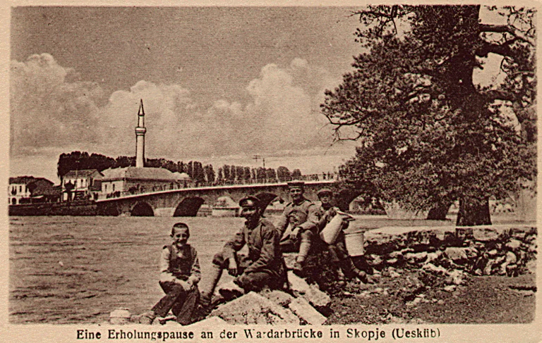
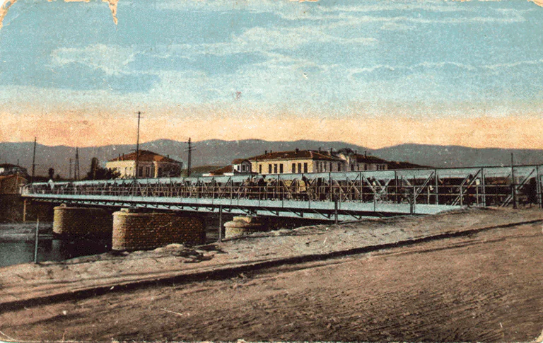
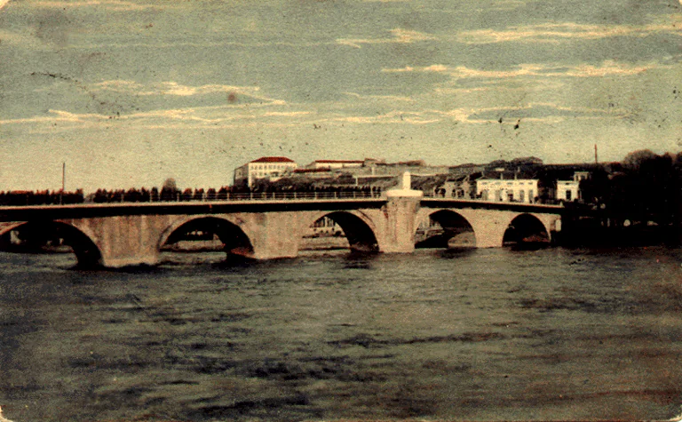
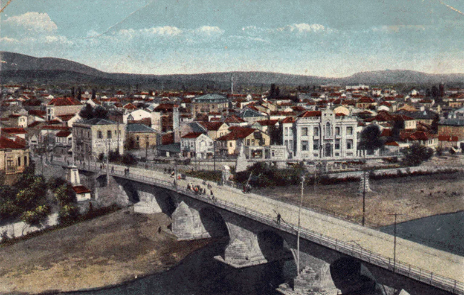
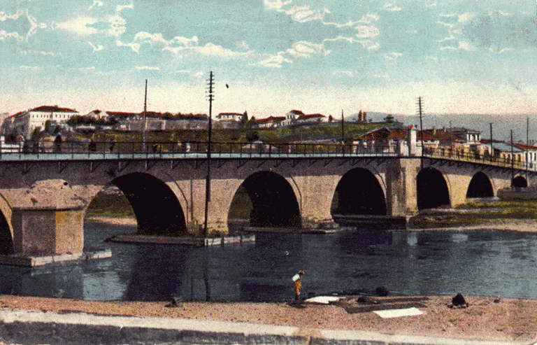

Skopje 1916 - 1917 pont
Documents des guerres balkaniques
- Année
- 1916-1917
- Durée
- 00:13

Au centre de la ville, un monumental pont de pierre (appelé simplement « pont de pierre ») a été construit sur le Vardar. Selon certaines sources turques, il date de la seconde moitié du XVe siècle, sous le sultan Mehmed II. Selon les recherches les plus récentes, menées en 1990 lors de sa restauration, il remonterait à l'époque de Justinien Ier, au VIe siècle. Il est fait de blocs de pierre bien taillés, et sa structure repose sur de puissantes piles reliées par 13 arches en plein cintre. En 1905, des trottoirs en béton remplacent les planches qui les couvraient. En 1937, il est élargi par des consoles sur lesquelles on déplace les passages piétons. Sur la photo, Skopje à la fin du XIXe siècle : le pont de pierre et le vieux platane. En haut à droite, la forteresse de Skopje - Kale avec la caserne.

Le pont de pierre - fin du XIXe siècle. À l'arrière-plan à gauche, la mosquée Burmali.

Le pont de pierre - fin du XIXe siècle. À l'arrière-plan à gauche, la mosquée Burmali.

Skopje à la fin du XIXe et au début du XXe siècle (en été) - vue du pont de pierre. Au premier plan, un poteau téléphonique avec une boîte aux lettres. Juste à côté, un réverbère, premier élément de mobilier urbain. C'est l'été : les passants se protègent du soleil avec des ombrelles. Les marchandises étaient transportées en chars à bœufs, les calèches servant de transport public. Juste à droite du pont, une grande roue de moulin.

Skopje à la fin du XIXe et au début du XXe siècle (en hiver) - vue du pont de pierre. Au premier plan, un poteau téléphonique avec une boîte aux lettres. Juste à côté, un réverbère, premier élément de mobilier urbain. On remarque des rues boueuses non pavées. À l'arrière-plan, le quartier juif et la forteresse de Skopje - Kale.

Panorama du pont de pierre au début du XXe siècle.

Le pont de pierre - vers 1905. À l'arrière-plan, en haut à gauche, la forteresse de Skopje - Kale avec les casernes. À droite, le vieux platane.

Le pont de pierre à la fin du XIXe et au début du XXe siècle. En haut à droite, la forteresse de Skopje - Kale.

Skopje à l'époque ottomane - début du XXe siècle. On voit sur la photo qu'une moitié du pont de pierre a un parapet de pierre, l'autre un garde-corps provisoire en fer et en bois. En 1905 commença le remplacement du parapet de pierre par un garde-corps en fer. À Skopje à l'époque ottomane - début du XXe siècle. On voit sur la photo qu'une moitié du pont de pierre a un parapet de pierre, l'autre un garde-corps provisoire en fer et en bois. En 1905 commença le remplacement du parapet de pierre par un garde-corps en fer. Dans l'angle gauche, derrière le pont, le théâtre turc. Juste à droite du pont, une grande roue de moulin. À droite, le vieux platane auquel fut pendu le corps de Karpoš juste après l'écrasement de son soulèvement - 1689. À l'arrière-plan, toute la forteresse de Skopje - Kale et les maisons du quartier juif. On remarquera, au premier plan, les femmes qui blanchissent le linge dans l'eau claire du Vardar.

Un groupe de Turcs sur le pont de pierre - début du XXe siècle. On remarquera que les trottoirs du pont sont couverts de planches.

Le pont ferroviaire sur le Vardar à Skopje - fin du XIXe siècle.

Pont de pierre sur la Pčinja - environs de Skopje (n'existe plus). À en juger par l'homme debout au sommet, le pont s'élève à environ 15 mètres au-dessus de l'eau. (années 1910)

Skopje en 1902. On voit le pont de bois et, derrière, l'ancien café « Boges », où eurent lieu les premières représentations théâtrales. Au-dessus, la forteresse de Skopje - Kale avec la caserne.

Le pont de pierre - 1905. À gauche, derrière lui, le théâtre turc et, en haut, la forteresse de Skopje - Kale.

Vue de la rive droite du Vardar à travers la ramure du vieux platane - vers 1910. On voit une partie du pont de pierre, la mosquée Burmali et les boutiques devant elle.

Skopje avant 1912. Le pont de pierre avec consoles et garde-corps en fer. À droite, le vieux platane, et en haut la forteresse de Skopje - Kale.

Skopje pendant la guerre balkanique. À l'arrière-plan, la mosquée Burmali.

Vue d'une partie du pont de pierre vers la forteresse de Skopje - Kale (vers 1910)

Vue d'une partie du pont de pierre ; à l'arrière-plan à gauche, le théâtre turc. Au-dessus se dresse la forteresse de Skopje - Kale. (vers 1910)

Le pont de pierre avec un groupe de personnes - vers 1913

Le pont de pierre sur le Vardar à Skopje - vers 1913

Le pont de pierre sur le Vardar à Skopje - vers 1913. À l'arrière-plan, en haut à droite, la forteresse de Skopje - Kale.

Skopje en 1912 - une peinture. Le pont de pierre et la mosquée Burmali. À l'arrière-plan, une superbe ceinture verte de peupliers. On remarque l'insertion d'une architecture classique. Les nouveaux quais sont un élément urbain nouveau. Les groupes de maisons, de boutiques et d'ateliers devant le pont font partie de la composition, avec des traits traditionnels et des influences européennes.

Le pont de fer sur le Vardar à Skopje avec vue sur l'ancienne école, Saint-Mina et la Sainte-Vierge - vers 1920.

Le pont de fer, construit en 1905. À l'arrière-plan, le bâtiment de la première université de Skopje. (1915)

Le pont de fer, construit en 1905. À l'arrière-plan, le bâtiment de la première université de Skopje. (années 1920.)

Le pont de fer sur le Vardar à Skopje, construit en 1905. À l'arrière-plan, le bâtiment de la première université de Skopje. (années 1920)

Le pont de fer, construit en 1905. (années 1920)

Le pont de fer sur le Vardar à Skopje avec vue sur les immeubles du quai « Dimitar Vlahov ». (années 1920)

Skopje, vers 1920. Une partie de la place devant le pont de pierre. Les premiers kiosques de services et de vente, à l'architecture soignée dans les détails, notamment les toits. Le pont a été élargi par des consoles piétonnes. En haut à l'arrière-plan, la forteresse de Skopje - Kale.

Skopje, vers 1920. Une partie de la place devant le pont de pierre. Devant et sur le pont, on remarque de petites constructions servant à informer les habitants par affiches. Le pont a été élargi par des consoles piétonnes. À l'arrière-plan, en haut à gauche, la forteresse de Skopje - Kale.

Le pont de pierre avec un groupe de personnes regardant la crue du Vardar. (années 1920)

Le pont de pierre - 1920. À l'arrière-plan, on voit la Banque ottomane.

Vue du pont de pierre vers la vieille ville et le quartier Pajko, avec le cabinet du dentiste Dr Rubens et la Banque ottomane - vers 1927.

Vue du pont de pierre vers la vieille ville, le bazar et la pente de Gazi Baba. Juste à droite du pont se trouvait le cabinet du dentiste Dr Rubens. Un peu plus à droite, la Banque ottomane. Entre les deux, une petite place avec une station de calèches. Au milieu se dressait le monument aux morts de la guerre balkanique - vers 1927.

Vue du pont de pierre vers la vieille ville, le bazar et la pente de Gazi Baba. Juste à droite du pont se trouvait le cabinet du dentiste Dr Rubens. Un peu plus à droite, la Banque ottomane. Entre les deux, une petite place avec une station de calèches. Au milieu de la place se dressait le monument aux combattants tombés - vers 1927.

Vue du pont de pierre vers la vieille ville et le quartier Pajko, avec le cabinet du dentiste Dr Ruben et la Banque ottomane - vers 1927.

Vue vers la rive droite du Vardar avec une partie du pont et le Cercle des officiers - années 1930. À gauche, le reste du vieux platane abattu, auquel fut pendu en 1689 le corps de Karpoš après l'écrasement du soulèvement.

Vue d'une partie du pont de pierre, du vieux platane et de la forteresse de Skopje - Kale - vers 1920.

Skopje, vers 1920. Le pont de pierre avec la forteresse de Skopje - Kale à l'arrière-plan. Au premier plan, on blanchit le linge dans l'eau claire du Vardar.

Vue de la passerelle en bois et du quai sur la rive droite du Vardar. Les bâtiments ont des détails néoclassiques et baroques. La rue est l'actuelle « Ilindenska ». Parmi ces immeubles se trouve l'école secondaire de musique. Au premier plan, la passerelle par laquelle on gagnait le Théâtre national.

La passerelle en bois sur le Vardar, avec le Cercle des officiers à l'arrière-plan. À côté, les bâtiments de la banque et de l'ancienne poste - fin des années 1920.

Vue de la passerelle en bois sur le Vardar ; à l'arrière-plan, le Cercle des officiers, l'ancienne poste et la banque - vers 1930.

Vue vers la forteresse de Skopje - Kale avec la caserne. En contrebas se trouve le quartier juif. Au premier plan, la passerelle en bois - années 1950.

Vue vers le Théâtre national et la passerelle en bois - années 1930.

Le pont de pierre - années 1930. Le Théâtre national à l'arrière-plan et, au-dessus, la forteresse de Skopje - Kale.

Vue d'une partie de la place et du pont de pierre. À l'arrière-plan à gauche, le Théâtre national et la forteresse de Skopje - Kale. On remarque la calèche, principal moyen de transport des habitants. Au premier plan, des bâtiments démolis pour la construction de la Banque nationale - vers 1930.

La crue du Vardar. Le pont est à moitié sous l'eau. La photo a été prise de la rive droite vers la rive gauche - années 1930.

Reconstruction et remplacement du pavage du pont de pierre. Vue sur le palais Ristić et les premiers kiosques - vers les années 1930.

Vue depuis le pont de pierre vers la place. À gauche, on dégage le terrain pour la construction de la Banque nationale - années 1930.

Vue depuis la rive gauche du Vardar vers le pont de pierre et le Cercle des officiers - années 1930.

Le pont de pierre sur le Vardar - vers 1930. À l'arrière-plan, le Théâtre national et, en haut à droite, la forteresse de Skopje - Kale.

Le pont de pierre - années 1950.

Une partie du pont de pierre. À l'arrière-plan, l'hôtel « Grand ». - années 1960

Le pont de pierre et la forteresse de Skopje - Kale dans les années 1960, avant l'aménagement des quais.

Vue du pont de pierre et de la forteresse de Skopje - Kale. (années 1970)

Le pont de pierre dans les années 1970 avec l'espace central du quai.

Le pont de pierre et la place dans les années 1970.

Vue de la rive droite vers la rive gauche du Vardar, vers le pont de pierre, une partie de la place et la nouvelle poste à l'arrière-plan. (années 1970)

L'actuel pont « Goce Delčev », photographié depuis la forteresse de Skopje - Kale. (années 1990)

Documents des guerres balkaniques
 Aqueduc4 cartes postales
Aqueduc4 cartes postales Kale30 cartes postales
Kale30 cartes postales Ponts60 cartes postales
Ponts60 cartes postales Quai58 cartes postales
Quai58 cartes postales Place46 cartes postales
Place46 cartes postales Édifices66 cartes postales
Édifices66 cartes postales Églises chrétiennes19 cartes postales
Églises chrétiennes19 cartes postales Édifices musulmans33 cartes postales
Édifices musulmans33 cartes postales Cercle des officiers29 cartes postales
Cercle des officiers29 cartes postales Théâtre28 cartes postales
Théâtre28 cartes postales Gare ferroviaire13 cartes postales
Gare ferroviaire13 cartes postales Écoles36 cartes postales
Écoles36 cartes postales Parcs12 cartes postales
Parcs12 cartes postales Marchés18 cartes postales
Marchés18 cartes postales Rues38 cartes postales
Rues38 cartes postales Panorama I60 cartes postales
Panorama I60 cartes postales Panorama II30 cartes postales
Panorama II30 cartes postales Collages55 cartes postales
Collages55 cartes postales Inondations9 cartes postales
Inondations9 cartes postales Séisme27 cartes postales
Séisme27 cartes postales Skopje 200026 cartes postales
Skopje 200026 cartes postales